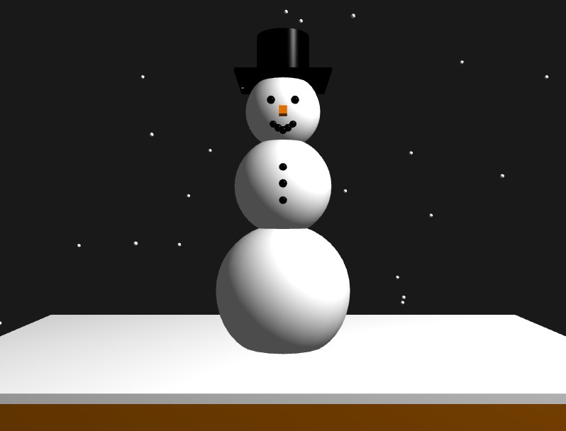

Steve The Snowman

Medium: 3D Modeling & WebGL ┃ Computer Graphics Capstone
Steve the Snowman is an interactive 3D model developed as the capstone project for my Computer Graphics course. Beyond geometry creation, this project required technical implementation of dynamic lighting, realistic shadow mapping, and a user-controlled orbital camera system.
To add personality and test interactivity, I programmed custom animations allowing Steve to tip his hat, bridging creative character design with complex graphics programming.